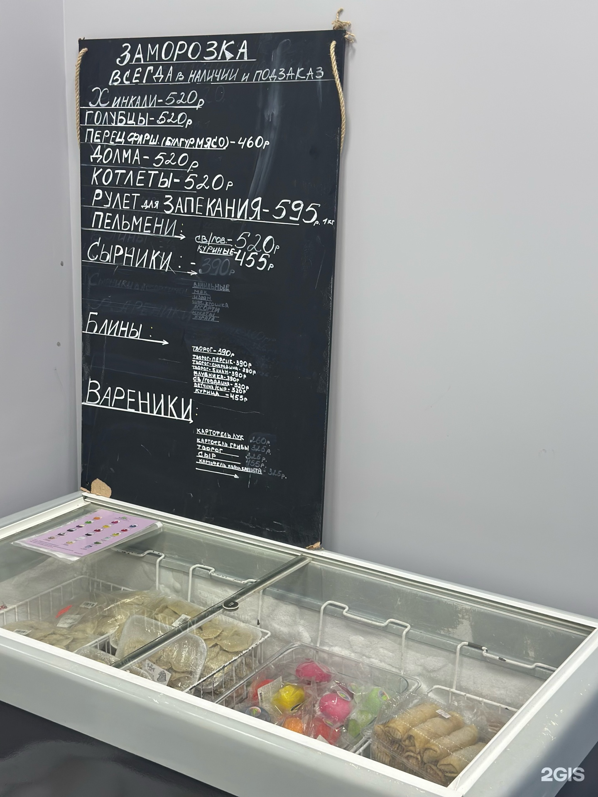

Домашняя заморозка — всегда в наличии и под заказ
Лепим руками, замораживаем и держим в витрине. Достаточно достать из морозилки — и на столе домашний ужин. Цены — за килограмм.

Почему заморозка у нас
- Ручная лепка. Не конвейер: каждое изделие лепит человек.
- Понятный состав. Тесто, мясо, овощи, творог — без лишнего.
- Удобно. Замороженное хранится, готовится за минуты.
- Выгодно. Килограмм хинкали дешевле похода в ресторан на семью.
| Позиция | Цена за 1 кг |
|---|---|
| Хинкали | 520 ₽ |
| Пельмени (свинина / говядина) | 520 ₽ |
| Пельмени (куриные) | 455 ₽ |
Хинкали — с сочным мясом и бульоном внутри. Пельмени — тонкое тесто и начинка, которой не стыдно поделиться.
| Позиция | Цена за 1 кг |
|---|---|
| Голубцы | 520 ₽ |
| Долма | 520 ₽ |
| Перец фаршированный (булгур, мясо) | 460 ₽ |
Домашние голубцы в капустном листе, долма в виноградном, перец с булгуром и мясом. Греются в кастрюле — и ужин готов.
| Позиция | Цена за 1 кг |
|---|---|
| Котлеты | 520 ₽ |
| Рулет для запекания | 595 ₽ |
Котлеты — плотные, мясные, без «хлебной» начинки. Рулет — для духовки: достал, запёк, нарезал.
| Позиция | Цена за 1 кг |
|---|---|
| Вареники (картофель, лук) | 260 ₽ |
| Вареники (картофель, грибы) | 325 ₽ |
| Вареники (творог) | 325 ₽ |
| Вареники (сыр) | 455 ₽ |
| Вареники (картофель, квашеная капуста) | 325 ₽ |
Классика, которая выручает в любой день. С жареным луком, сметаной или просто с маслом.
| Позиция | Цена за 1 кг |
|---|---|
| Блины с творогом | 390 ₽ |
| Блины (творог — персик) | 390 ₽ |
| Блины (творог — смородина) | 390 ₽ |
| Блины (творог — банан) | 390 ₽ |
| Блины (клубника) | 390 ₽ |
| Блины (свинина / говядина) | 520 ₽ |
| Блины (ветчина / сыр) | 520 ₽ |
| Блины (курица) | 455 ₽ |
Сладкие — к чаю и на завтрак. С мясом и ветчиной — полноценный обед. Разогреваются за пару минут.
| Позиция | Цена за 1 кг |
|---|---|
| Сырники (ванильные, мак, изюм, шоколадная крошка, ассорти, цукаты, курага) | 390 ₽ |
Семь вариантов — от классических ванильных до сырников с цукатами и курагой. Обжарьте на сковороде или запеките.
Заморозка — всегда в наличии и под заказ
Ассортимент в витрине меняется: что-то лепим каждый день, что-то — под заказ. Если нужен большой объём к празднику или на семью, предупредите заранее — подготовим.
- Напишите в WhatsApp, Telegram или позвоните по телефону +7 (928) 963-59-34.
- Скажите, что нужно и в каком количестве.
- Согласуйте дату и филиал.
- Заберите заказ или оформите доставку по Ставрополю.

Частые вопросы
Можно ли заказать определённый вес?
Да, обсуждаем количество при заказе.
Сколько хранится заморозка?
Зависит от продукта. Сроки уточняйте при покупке — мы не скрываем информацию.
Есть ли доставка заморозки?
Да, по Ставрополю. Условия уточняйте при заказе.
Можно ли купить готовые, а не замороженные?
В кафе-зоне можно поесть домашнюю еду. Ассортимент готовых блюд уточняйте в магазине.
Делаете ли большие заказы на праздник?
Да, но лучше предупредить заранее — на большие объёмы нужно время.